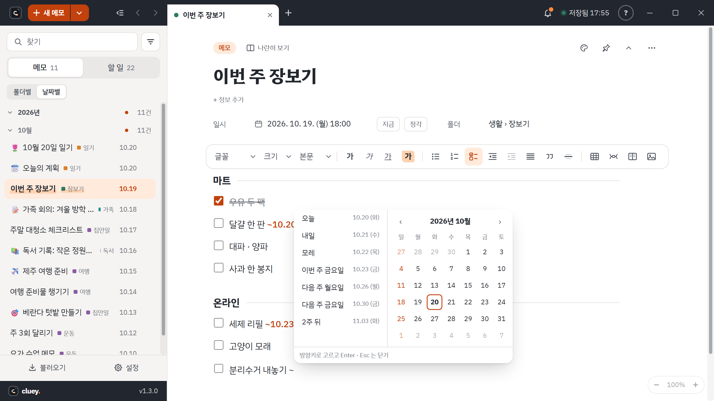
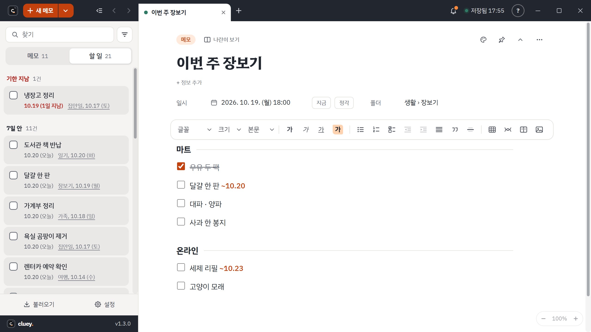

메모 속에 할 일을 적습니다
본문 줄 맨 앞에 [] 를 치면 체크 칸이 생깁니다. 도구 줄의 할 일 단추를 써도 됩니다. 회의록의 "할 일" 칸도 같은 체크 칸이라, 어느 메모에 적었든 한곳에 모입니다.
기한은 달력으로 정합니다
- 할 일 줄에서
~를 칩니다. 고르기 창이 뜹니다. - 왼쪽에서 오늘, 내일, 모레, 이번 주 금요일, 다음 주 월요일 · 금요일, 2주 뒤 중 하나를 고르거나, 오른쪽 달력에서 날짜를 누릅니다. 방향키와 Enter 로도 되고 Esc 로 닫습니다.
- 고르면
~가~10.24처럼 날짜로 바뀝니다. 날짜를 직접 쳐도 됩니다.
이미 적은 할 일은 줄에 마우스를 올리면 줄 끝에 달력 단추가 나타납니다. 기한을 바꾸거나 지울 수 있고, 기한이 없던 줄에는 새로 붙입니다.

할 일을 한곳에서 봅니다
위쪽 할 일 탭에서 끝나지 않은 할 일을 모아 봅니다. 줄을 누르면 그 할 일이 든 메모로 갑니다. 잠긴 메모의 할 일은 잠긴 동안 모음에서 빠집니다.
기한이 되면 알려 줍니다
- 끝나지 않은 할 일 중 기한이 오늘이거나 이미 지난 것을 알립니다.
- 하루에 한 번입니다. Cluey 를 켤 때 바로, 켜 둔 채 날이 바뀌면 오전 9시에 알립니다.
- 알림을 누르면 할 일 탭이 열립니다.
- Cluey 는 윈도우를 켤 때 자동으로 실행되고 알림 영역(시계 옆)에 숨어 있다가 알려 줍니다. 설정에서 끌 수 있습니다.
시각과 날짜 빨리 넣기: Ctrl+; 는 지금 시각(14:07), Ctrl+Shift+; 는 오늘 날짜(10.19 (월))를 본문에 넣습니다.
